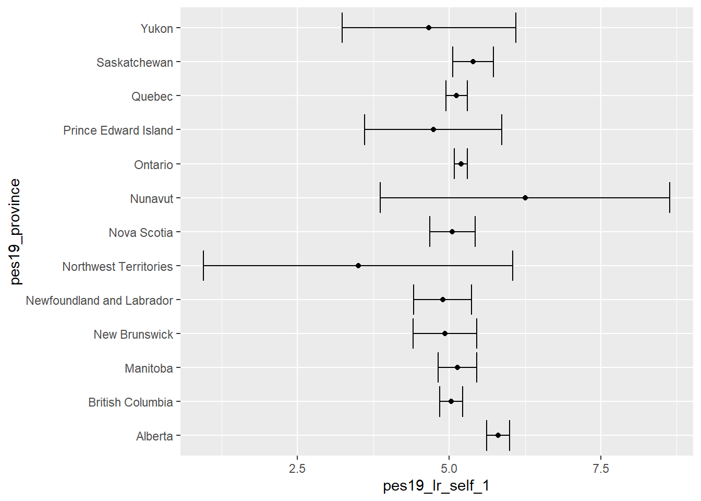

# Loading the data sets
library(rio)
canada <- import("2019 Canadian Election Study.rds")16 ANOVA
To illustrate the use of ANOVA we compare mean left-right self placement (pes19_lr_self_1) in Canadian provinces (pes19_province). This uses data from the 2019 Canadian Election Study:
First, we produce a plot of the mean estimates with 95% confidence intervals to get an idea of the data:
library(tidyverse) # Load tidyverse for ggplot2── Attaching core tidyverse packages ──────────────────────── tidyverse 2.0.0 ──
✔ dplyr 1.1.4 ✔ readr 2.1.5
✔ forcats 1.0.0 ✔ stringr 1.5.1
✔ ggplot2 3.4.4 ✔ tibble 3.2.1
✔ lubridate 1.9.3 ✔ tidyr 1.3.1
✔ purrr 1.0.2
── Conflicts ────────────────────────────────────────── tidyverse_conflicts() ──
✖ dplyr::filter() masks stats::filter()
✖ dplyr::lag() masks stats::lag()
ℹ Use the conflicted package (<http://conflicted.r-lib.org/>) to force all conflicts to become errorsggplot(data = canada |> filter(!is.na(pes19_province)),
mapping = aes(x = pes19_lr_self_1, y = pes19_province)) +
stat_summary(fun.data = "mean_se", geom = "point") +
stat_summary(fun.data = "mean_cl_normal", geom = "errorbar") Warning: Removed 5971 rows containing non-finite values (`stat_summary()`).
Removed 5971 rows containing non-finite values (`stat_summary()`).
ggplot(…)-
This is the function to produce a graph.
data = canada |> filter(!is.na(pes19_province))-
We specify the data set used:
canada. But we also specify what we want to filter this data frame, so that only cases with non-missing values for the variablepes19_provinceremain. mapping = aes(x = pes19_lr_self_1, y = pes19_province))-
This code links two variables from the data set to the x and y axis respectively.
stat_summary(fun.data = "mean_se", geom = "point"))-
The function
stat_summaryoffers a quick way to calculate mean for each group (fun.data = "mean_se") and plot this in our graph as a point (geom = "point"). stat_summary(fun.data = "mean_cl_normal", geom = "errorbar")-
The function
stat_summaryis again used, but now to calculate a confidence interval for the mean (fun.data = "mean_cl_normal"), which is then displayed as an error bar in the graph (geom = "errorbar").
We can calculate the one-way ANOVA using function aov from package stats (which is one of the few packages that R loads automatically on startup):
anova_out <- aov(formula = pes19_lr_self_1 ~ pes19_province,
data = canada)
summary(anova_out)anova_out <- aov()-
The
aovfunction calculates the ANOVA. We assign the results to objectanova_out(you can choose any valid name that you like). formula = pes19_lr_self_1 ~ pes19_province-
This specifies the formula to be used in the format
<interval-ratio variable> ~ <categorical variable>. In our example the interval-ratio variable ispes19_lr_self_1and the categorial (grouping) variable ispes19_province. For your own data replace with the appropriate variables. data = canada-
This specifies the data set to be used.
summary(anova_out)-
This provides a summary of the model that we estimated (
anova_out).
Df Sum Sq Mean Sq F value Pr(>F)
pes19_province 12 277 23.046 4.261 9.74e-07 ***
Residuals 4356 23561 5.409
---
Signif. codes: 0 '***' 0.001 '**' 0.01 '*' 0.05 '.' 0.1 ' ' 1
33453 observations deleted due to missingnessThe summary will print out the degrees of freedom (Df), sum of squares (Sum Sq), mean squares (Mean Sq), F value (F value) and p-value (Pr(>F)). In this example we observe a significant difference in the mean left-right scores of inhabitants of Canadian provinces, F(12, 4356) = 4.261, p < .001.
16.1 Pairwise t-test for comparing multiple group means
We can use a pairwise t-test for comparing the means of all possible pairs of groups. We use a multiple testing adjustment (bonferroni correction) to account for the fact that we are conducting many t-tests:
pairwise.t.test(x = canada$pes19_lr_self_1,
g = canada$pes19_province,
p.adjust.method = "bonferroni",
alternative = "two.sided")pairwise.t.test(…)-
This calls the function
pairwise.t.testto conduct this test. It is included in thestatspackages, which is loaded automatically. x = canada$pes19_lr_self_1-
We specify the interval ratio variable here (in our case variable
pes19_lr_self_1from the datasetcanada). We need to use the dollar sign notation, i.e.<dataset>$<variable name> g = canada$pes19_province-
We specify the grouping variable here, again using the dollar sign notation (see above).
p.adjust.method = "bonferroni"-
This specifies that we want to use the Bonferroni correction.
alternative = "two.sided"-
This conducts two-sided significance tests (the default). Other options include
"greater"and"less".
Pairwise comparisons using t tests with pooled SD
data: canada$pes19_lr_self_1 and canada$pes19_province
Alberta British Columbia Manitoba New Brunswick
British Columbia 1.7e-06 - - -
Manitoba 0.022 1.000 - -
New Brunswick 0.041 1.000 1.000 -
Newfoundland and Labrador 0.066 1.000 1.000 1.000
Northwest Territories 1.000 1.000 1.000 1.000
Nova Scotia 0.034 1.000 1.000 1.000
Nunavut 1.000 1.000 1.000 1.000
Ontario 4.5e-06 1.000 1.000 1.000
Prince Edward Island 1.000 1.000 1.000 1.000
Quebec 3.0e-05 1.000 1.000 1.000
Saskatchewan 1.000 1.000 1.000 1.000
Yukon 1.000 1.000 1.000 1.000
Newfoundland and Labrador Northwest Territories
British Columbia - -
Manitoba - -
New Brunswick - -
Newfoundland and Labrador - -
Northwest Territories 1.000 -
Nova Scotia 1.000 1.000
Nunavut 1.000 1.000
Ontario 1.000 1.000
Prince Edward Island 1.000 1.000
Quebec 1.000 1.000
Saskatchewan 1.000 1.000
Yukon 1.000 1.000
Nova Scotia Nunavut Ontario Prince Edward Island
British Columbia - - - -
Manitoba - - - -
New Brunswick - - - -
Newfoundland and Labrador - - - -
Northwest Territories - - - -
Nova Scotia - - - -
Nunavut 1.000 - - -
Ontario 1.000 1.000 - -
Prince Edward Island 1.000 1.000 1.000 -
Quebec 1.000 1.000 1.000 1.000
Saskatchewan 1.000 1.000 1.000 1.000
Yukon 1.000 1.000 1.000 1.000
Quebec Saskatchewan
British Columbia - -
Manitoba - -
New Brunswick - -
Newfoundland and Labrador - -
Northwest Territories - -
Nova Scotia - -
Nunavut - -
Ontario - -
Prince Edward Island - -
Quebec - -
Saskatchewan 1.000 -
Yukon 1.000 1.000
P value adjustment method: bonferroni 16.2 Reporting ANOVA
ANOVA compares variances in order to establish whether there is a difference in means between more than two groups. We use example data on the rating of 4 seasons of game of thrones.
Example output R (do not include the output directly in an academic paper):
got_out <- aov(formula = score ~ season,
data = got_dta)
summary(got_out) Df Sum Sq Mean Sq F value Pr(>F)
season 3 92.8 30.943 7.306 0.000121 ***
Residuals 175 741.2 4.235
---
Signif. codes: 0 '***' 0.001 '**' 0.01 '*' 0.05 '.' 0.1 ' ' 116.2.0.1 Reporting
The correct report includes:
- A conclusion about the null hypothesis;
- F(degrees of freedom Between Groups, degrees of freedom Within Groups,) = F-ratio,
- p = p-value. When working with statistical software, you should report the exact p-value that is displayed.
- in R, small values may be displayed using the scientific notation (e.g. 2.2e-16 is the scientific notation of 0.00000000000000022.) This means that the value is very close to zero. R uses this notation automatically for very small numbers. In these cases, write p < 0.001 in your report.
Report
✓ There was a statistically significant difference between the mean rating of game of thrones seasons across different groups, F(3, 175) = 7.306, p < 0.001.
16.3 Bonferroni correction
library(stats)
pairwise.t.test(score, season, p.adjust.method="bonferroni")
Pairwise comparisons using t tests with pooled SD
data: score and season
S5 S6 S7
S6 0.92850 - -
S7 0.20375 1.00000 -
S8 0.28608 0.00360 0.00024
P value adjustment method: bonferroni The description of the pairwise comparison with Bonferroni correction can be added after the report from the ANOVA. You list the groups that differ significantly. Then you indicate that the other categories were not statistically significant and include the lowest p value.
Report
The difference between the last category (season 8) and the categories season 6 and season 7 is significant when we apply a t-test with Bonferroni correction (p < 0.05). The differences between the remaining categories are not statistically significant (p = 0.20375 or higher).